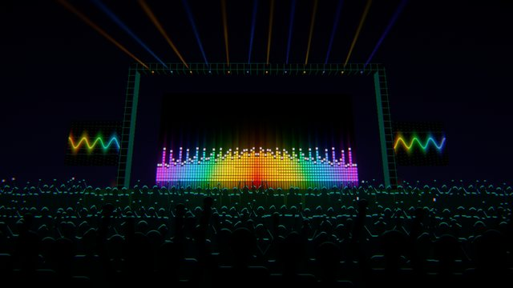
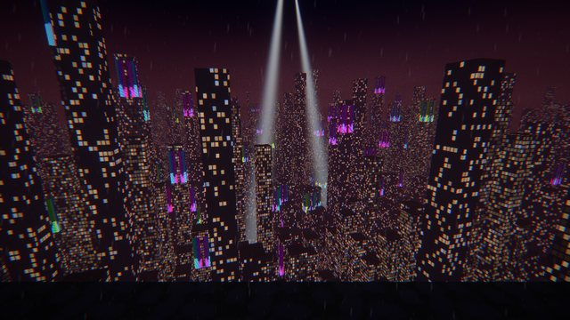
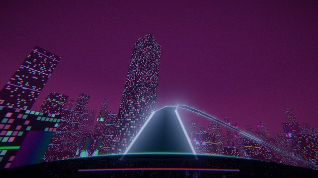
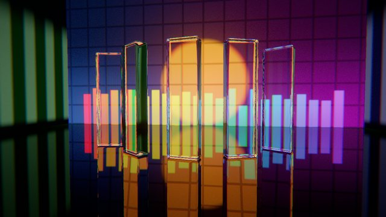
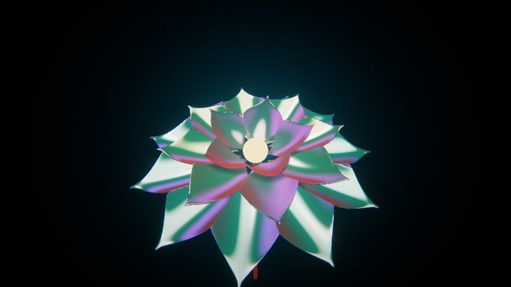
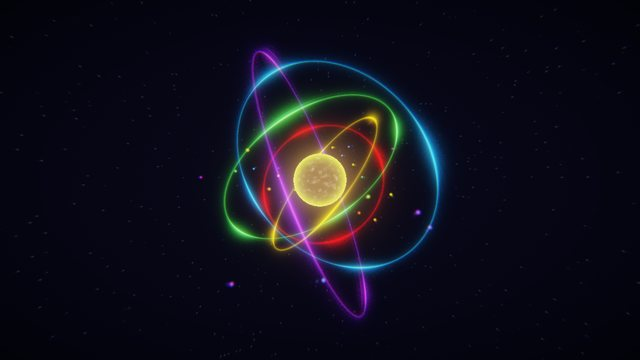
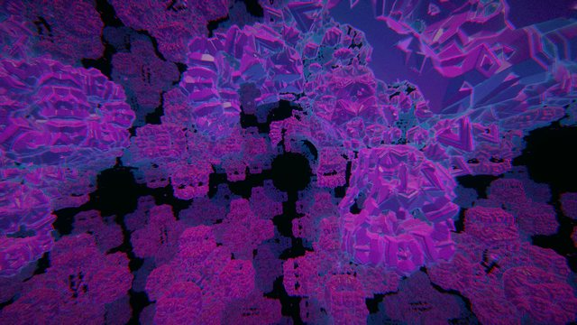
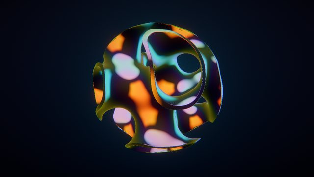
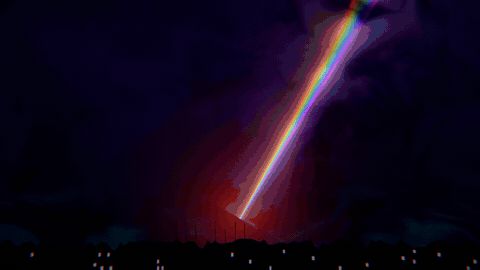
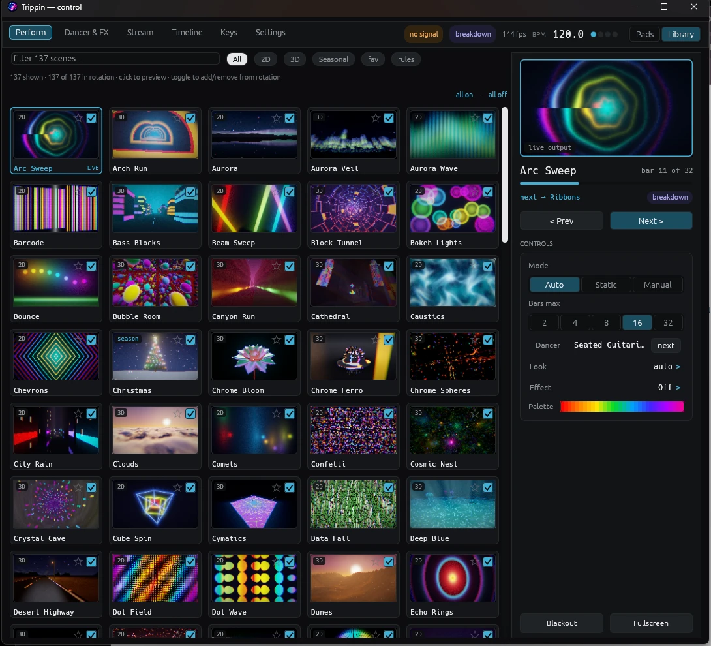

130 are hand-written GPU shaders that run in the app itself, and 40 are shows from the optional Unity engine. Every one moves with the music, and new ones land with every release.









laser_show: the rig changes formation every four bars, and the beams cut through drifting smoke.
A taste of each family. Heavy 3D scenes are tagged and switch on automatically on GPUs that can run them.
Raymarched worlds with bloom and filmic tone mapping. Festival stages, megacities, deep-sea caustics, ice caves, stained-glass cathedrals.
Thin saturated beams through fog-machine smoke, with a new formation every four bars.
Smooth, endless travel that speeds up with the energy of the track. No jerky flashes.
Scenes that draw the music itself: spectrum, waveform, waterfall, meters.
Sunsets, rain, mountains and northern lights, moving with the mix.
Kaleidoscopes, fractals, fluid and liquid chrome.
Shockwaves, pyro, comets, LED walls and retro-futurist grids.
An optional engine (about 40 MB, downloaded the first time you switch it on) adds 40 shows with real-time lighting and geometry: festival stages and light rigs, maths and geometry, whole landscapes, a giant armoured android, and robot shows with an android DJ at the decks, a robot rave and an assembly line of industrial arms.
The control panel's library shows every scene as a thumbnail with its real name. Filter by 2D, 3D or seasonal, star your favourites, and tick scenes in or out of the auto-pilot's rotation.

Download Trippin, play a track, and watch the library react.